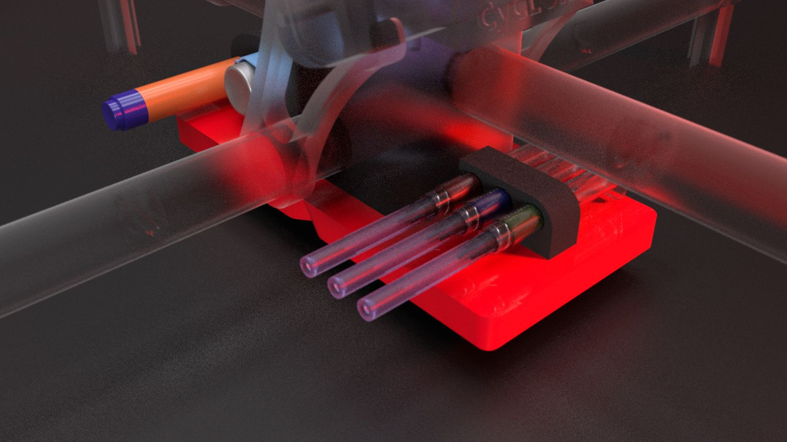
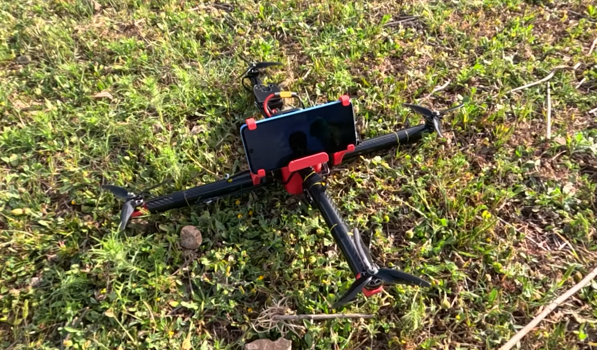
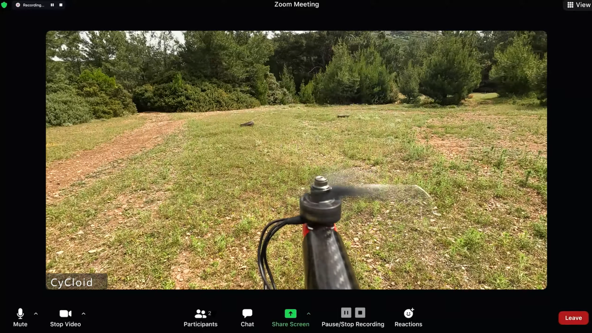

Overview
Cycloid is an emergency first-response UAV system designed for the island of Samos, where tourists and elderly residents often find themselves far from medical facilities. The project was inspired by a personal loss — the passing of a family member from cardiac arrest who might have been saved with faster medical response.
The System
- Medical Payload: Equipped with a defibrillator (CellAED), oximeter, thermometer, ECG sensor, and emergency medications (insulin, atropine, cortisone, aerolin). Payload is configurable by medical staff.
- Real-Time Communication: 5G and IoT connectivity enables real-time video conferencing between doctor and patient, live transmission of vital signs and imagery.
- Remote Treatment: Doctors can remotely release medications (pills, pre-filled syringes) and provide guided first aid instructions through the UAV.
- Coverage Design: Three station deployment designed to cover the entire island of Samos effectively.
- Hardware: Designed in SolidWorks, 3D printed (FFF), with SpeedyBee F7 V3 flight controller and Arduino Nano ESP32 for IoT/sensor integration.
Research Basis
The design followed ILCOR 2020 guidelines and the ABCDE emergency protocol. The team consulted with EKAV paramedics and local hospital doctors to determine optimal payload and communication requirements.
Awards
- 1st Place, Vodafone Generation Next 2024 — Awarded an educational visit to CERN's Large Hadron Collider